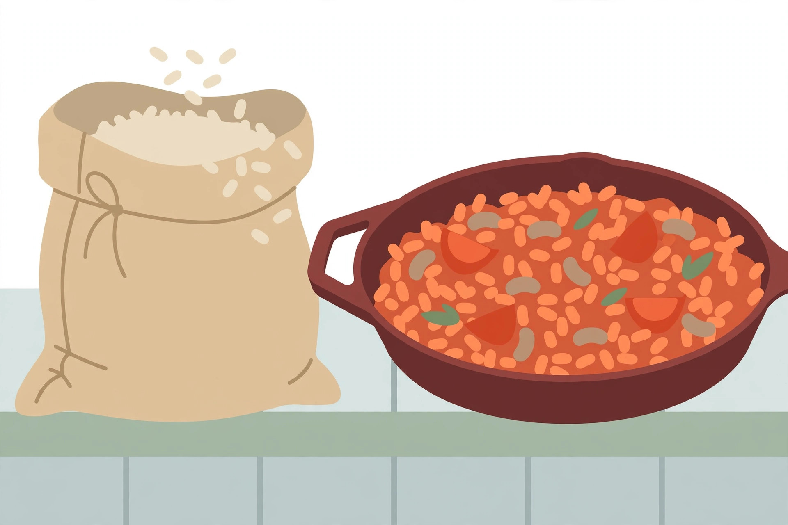

Rice-based cupboard meals that start with a dry bag

A bag of dry rice is the quietest insurance policy in the cupboard. It needs no fridge, no freezer, and no plan made days ahead — and yet most rice advice online splits into two unhelpful camps: plain side-dish instructions, or fried rice recipes that assume a container of leftovers already exists. What is missing in between is the dinner itself: the one-pot meals, bowls, and soups where rice is the base and everything else comes from the shelf. This guide fills that middle ground. It starts with the one decision that changes the result, compares the rice types a cupboard realistically holds, and then gives four dinner formats built only from shelf-stable partners. It also covers the one safety topic rice genuinely deserves — how cooked rice is stored — because a rice-based week only works if the leftovers are handled properly.
First, decide which rice dinner this is
Decision one: cook the rice in the dish, or cook it separately? Cooking rice in the dish — in broth, tomato juice, or bean liquid — means the grains absorb the seasoning as they soften, and there is one pot to wash. The cost is control: the liquid has to be about right, and the lid has to stay on. Cooking rice separately and combining at the end is more forgiving and lets each part be seasoned on its own, which is why bowls and fried rice work that way. Neither is better in general; they suit different nights. A tired night with one pot in mind points to the in-the-dish formats. A night built around leftovers points the other way.
Decision two: is this a fresh-rice dinner or a leftover-rice dinner? Fried rice is the clearest case. The leftover fried rice method published by Toronto's Daily Bread food-bank recipe series (Pantry Clips) starts from cooked rice that is already cold — three cups of it — tossed in a hot pan with eggs, diced vegetables, soy sauce, and flaked salmon or another cooked protein. Cold, day-old grains stay separate in the pan in a way warm, just-cooked rice does not, so the format is planned, not improvised: cook extra rice on purpose one night, chill it, and fry it the next. That single habit turns one bag of rice into two different dinners with almost no extra work.
The rice shelf, compared honestly
| Rice type | Texture when cooked | Best cupboard use | Watch out for |
|---|---|---|---|
| Long-grain white | Separate, fluffy grains | One-pot skillets, bowls, fried rice | Overcooks to soft if the lid keeps coming off |
| Short-grain white | Softer, grains cling together | Rice soups and porridge-style bowls | Too sticky for fried rice purists |
| Brown rice | Chewy, distinct grains | Bowls and salads where chew is welcome | Needs more time and liquid than white rice |
| Instant / minute rice | Soft, very fast | Emergency soup thickener, fastest bowls | Goes mushy if it sits in a simmering pot |
The table is a picker, not a ranking. Long-grain white is the default because it forgives the most formats. Brown rice earns its place when the dinner is a bowl that needs substance. Instant rice is not a lesser rice so much as a different tool: it belongs in the last minutes of a soup, not at the start of a one-pot skillet where it will dissolve before the other ingredients are ready.
Format 1: the one-pot tomato rice skillet
This format follows the pattern used by KitchPrep's one-pan rice dinners, where rinsed long-grain rice cooks directly in broth with a can of diced tomatoes. Adapted to a cupboard-only version, the canned protein and frozen or jarred vegetables can be swapped for beans or tuna without changing the method.
- Warm oil in a deep skillet or wide pot with a lid. Add garlic powder or jarred garlic and dried onion flakes and stir for about a minute.
- Add one cup of rinsed long-grain white rice and stir until the grains look glossy, about a minute more.
- Pour in two cups of broth or water with a stock cube, plus a standard can of diced tomatoes with all its juice. Stir once, well.
- Bring to a gentle boil, then turn the heat to low, cover with a tight lid, and simmer for about 18 minutes without lifting the lid — the trapped steam is what cooks the rice evenly, as the KitchPrep method notes.
- Check a spoonful. If it is tender, take the pot off the heat and rest it, covered, for five minutes. If it is still firm, add a splash of hot water and give it three to five minutes more.
- Stir through a drained can of beans, chickpeas, or tuna, warm through for two minutes, and finish with dried herbs, chili flakes, or a splash of vinegar.
What success looks like: the grains are tender and separate, the tomato liquid has been absorbed rather than pooling, and a spoonful tastes seasoned all the way through — because the rice drank the seasoning instead of being dressed with it afterwards.
Format 2: planned-leftover fried rice
- Use cold cooked rice — ideally cooked the day before and refrigerated in a sealed container. Break up any clumps with damp hands or a fork before the pan gets hot.
- Scramble one or two eggs in a little oil in a wide pan, slide them out, and set aside, following the order in the Pantry Clips method: egg first, vegetables next, rice last.
- Add diced onion, carrot, celery, or frozen peas to the pan and cook until softened. Add garlic and ginger if the shelf holds them.
- Add the rice and spread it out so as much of it touches the pan as possible. Leave it alone for a minute at a time so some grains crisp at the edges.
- Season with soy sauce a spoonful at a time, tasting as it goes, and fold the egg back in with any flaked canned fish, beans, or leftover protein.
What success looks like: grains stay distinct rather than clumping into porridge, a few edges are golden, and the seasoning is even — no mouthful dramatically saltier than the last.
Format 3: the pantry rice bowl
The bowl is the loosest format and the one Food Bloggers of Canada's pantry-formula guide illustrates with a quick chickpea rice bowl: cooked rice warmed with frozen vegetables, a half can of chickpeas drained and rinsed, olive oil, lemon juice, and dried herbs, finished with yogurt or grated cheese when available. The formula underneath it is worth stating plainly because it repeats all week without repeating a meal: warm grain, plus a canned legume or fish, plus something frozen or jarred for colour, plus oil and acid, plus a dried herb or spice blend. Mediterranean one night — chickpeas, olives, oregano, lemon. Soy and sesame the next — tuna, peas, soy sauce, a pinch of sugar. The rice does not change; the shelf around it does, which is exactly why a plain bag of long-grain rice outlasts any flavoured rice mix in usefulness.
Format 4: rice soup that eats like dinner
Rice soup fails when the rice is an afterthought tipped into a thin broth. It works when the rice is treated as the body of the soup: start with a can of crushed or diced tomatoes, broth or water, dried herbs, and a can of white beans or lentils, then add a small handful of rice — less than feels right, because it swells — and simmer until the grains are tender and the broth has turned slightly starchy. A squeeze of lemon or vinegar at the end keeps it from tasting flat. Instant rice shortens this format further, added in the final minutes. Either way, make only what will be eaten or properly stored, for the reason in the next section.
Cooked rice and food safety: the part not to skip
Rice deserves one specific warning that most grains do not. Consumer Reports' food-safety coverage explains that uncooked rice can carry spores of Bacillus cereus, that those spores can survive cooking, and that rice left at room temperature lets the bacteria grow and produce heat-stable toxins that reheating cannot cook out. The handling rules that follow from that, per the USDA guidance Consumer Reports cites, are simple and strict: refrigerate cooked rice within two hours — within one hour if it has been out in heat of 90°F or above; cool it in a shallow container so it chills quickly; keep it refrigerated for three to four days, or freeze it for one to two months; and reheat it to at least 165°F (74°C). Rice that sat out longer than the limit should be thrown away, not rescued. None of this argues against leftover rice — the fried rice format above depends on it. It argues for chilling it on purpose, promptly, instead of leaving the pot on the stove until bedtime.
General information only, not medical or food-safety advice for a specific situation. When in doubt about stored food, discard it.
FAQ
Does rice need rinsing? For the one-pot skillet, yes — the KitchPrep pattern rinses the rice, and rinsing keeps the grains more separate in a mixed dish. For rice soup or porridge-style bowls, the extra starch is useful body, so rinsing matters less.
Can brown rice swap into the skillet? Yes, with more liquid and more time, and the lid discipline matters even more. If the rest of the dinner is on a tight clock, long-grain white is the honest choice.
How much dry rice makes a dinner? One cup of dry long-grain rice in the skillet format, plus a can of beans or fish and the tomato liquid, comfortably covers a small household's main dish. Scale the liquid with the rice, not by eye alone, and keep the covered rest — it finishes the cooking.